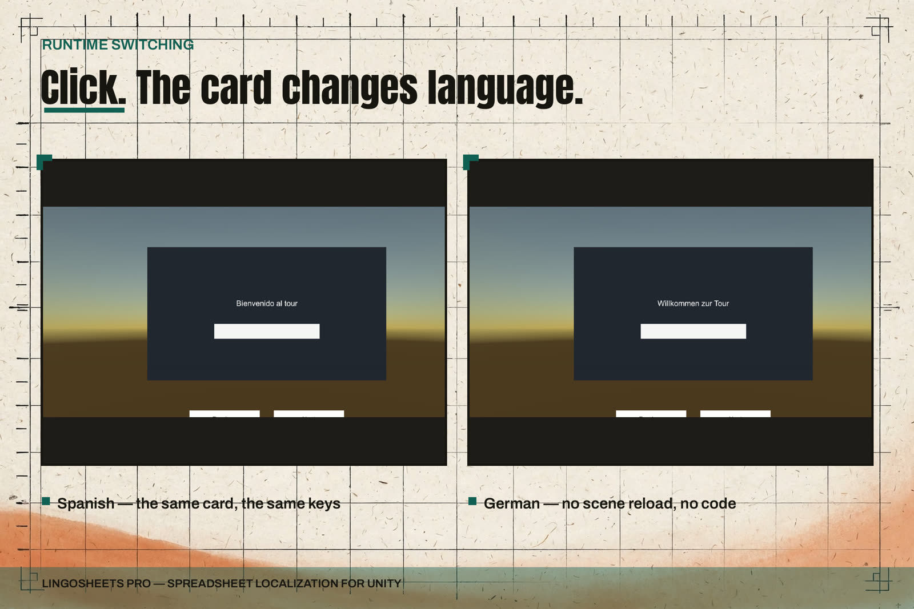

Runtime Use
Components, language switching, fallback chain.

What ships in a player build
The imported StringTable asset and the Runtime assembly. There is no spreadsheet parsing and no file access in the runtime lookup path, and the Runtime assembly holds no Editor reference. Sheets stay in the project as source files; the table is what the game carries.
Initialisation
If you used Run Setup, settings also live under Resources, and the facade loads them on first use with no wiring. Explicit initialisation always wins:
using ByteLura.LingoSheets;
Localization.Initialize(mySettings);Reading strings
string title = Localization.Get("menu.title");
string score = Localization.Get("game.score", 1200);
string hello = Localization.GetNamed("dialogue.hello",
new Dictionary<string, string> { { "playerName", "Ash" } });
if (Localization.TryGet("menu.title", out string maybe)) { /* ... */ }
bool exists = Localization.HasKey("menu.title");Get(key)returns the resolved string.Get(key, params object[])fills indexed placeholders ({0}, {1}) using invariant formatting.GetNamed(key, values)replaces named placeholders ({playerName}) from a dictionary. An unknown named placeholder is left in place and counted as a defect.- A malformed placeholder shows the raw text and counts a defect. Formatting problems do not interrupt the game loop.
- A lookup never returns null.
Switching languages
Localization.SetLanguage(new LanguageCode("es"));
Localization.SetLanguage(LanguageCode.FromSystemLanguage(Application.systemLanguage));
LanguageCode current = Localization.CurrentLanguage;
Localization.LanguageChanged += code => RefreshMyUi();Setting the language raises LanguageChanged once per actual change; setting the language that is already current raises nothing. The current language is updated before handlers run, so handlers can read the new value directly. Bound components refresh themselves; the event is there for your own objects.
LanguageCode normalises spellings (PT-br, pt_BR, pt-br all become pt-BR), exposes BaseLanguage, converts to and from SystemLanguage, and provides a display name for menus. The empty code means no language and is accepted wherever a code is expected.
The fallback chain
A lookup walks a fixed chain and stops at the first non-empty value:
- The exact language (for example
pt-BR). - Its base language (for example
pt). - The table's default language.
- The key itself. This last step can be switched off in settings (FallBackToKey), in which case an empty string is the final result.
Every resolution past step 1 is recorded in the missing-key log: key, requested language, where the value came from, and a hit count. Read it in code through Localization.MissingLog, clear it with ClearMissingLog, or watch it live in the home window during Play (Export and Missing Reports). A MissingKeyFound event is also raised for your own tooling.
Binding components
- LocalizedTextMeshPro binds a TextMeshPro text object (UI or 3D) to a key.
- LocalizedText binds a uGUI Text label to a key.
- Both carry a serialized key, optional inspector format arguments, refresh on enable and on language change, per-language font handling (Fonts and Fallback Chains), an optional automatic alignment flip for right-to-left languages, and Arabic shaping on output (RTL and Arabic Shaping).
- A component whose key has no entry shows the fallback result. It never shows an accidental blank.
- LanguageDropdownTMP and LanguageDropdown list exactly the table's languages, using display names. Selecting one switches the language. An external switch moves the dropdown to match, without raising a second language change.
Settings at a glance
The settings asset holds: the active table, the default language, the missing-key behaviour (including the FallBackToKey choice), the pseudo-localization toggle (Pseudo-Localization), and the per-language font maps (Fonts and Fallback Chains). The API Summary page lists the corresponding calls.